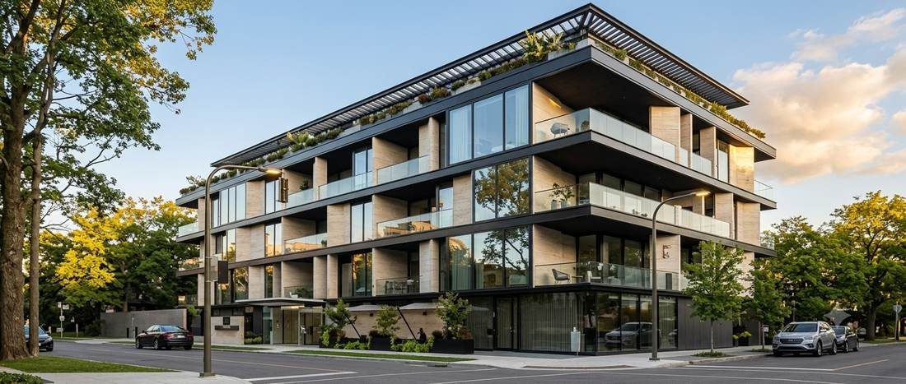
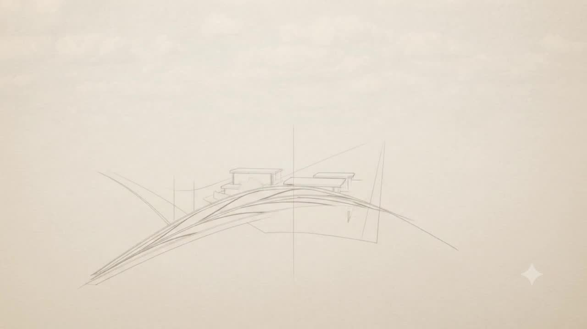
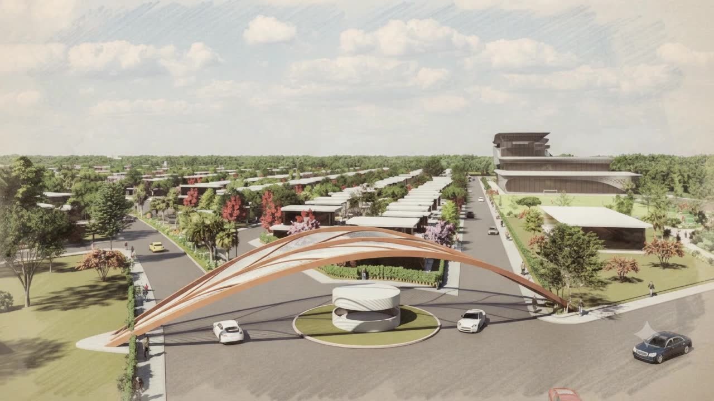
Four projects so far: Amoha Gardens, Amoha Leaf, Amoha Roots and Amoha Bloom. Each has its own approach; all of them begin with nature.
More green. More life.
Where life breathes better.
A space that feels like home.
Amoha is Sanskrit. It means clarity, a mind free of illusion. We chose it because it is what we build with.
Four developments, one vision.


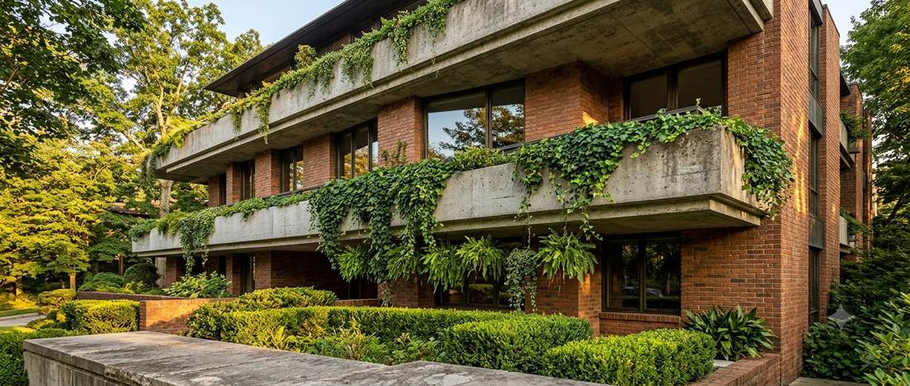
Private site visits, pricing and plot availability, from our own team.
More space, more nature and more possibility.
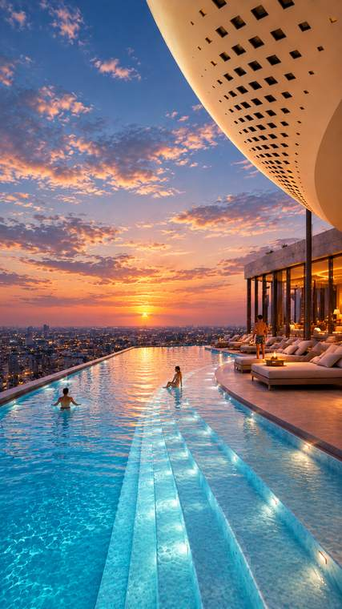
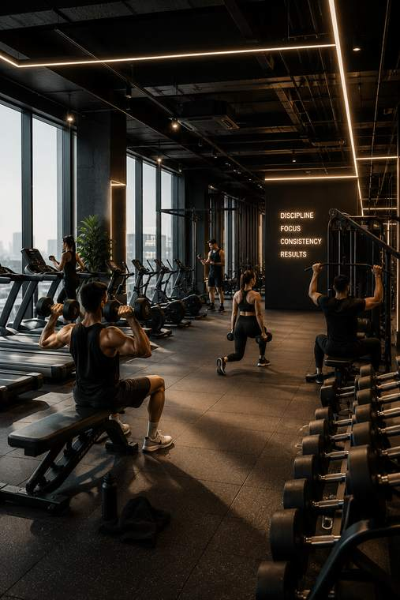
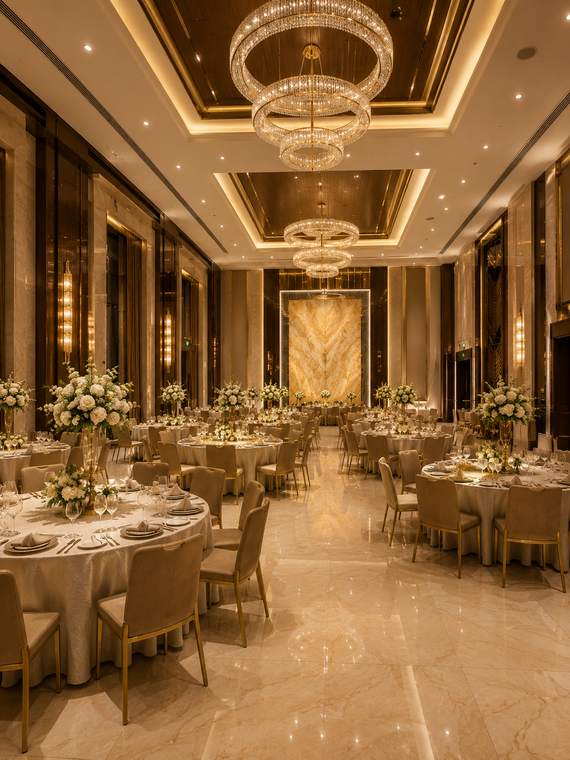
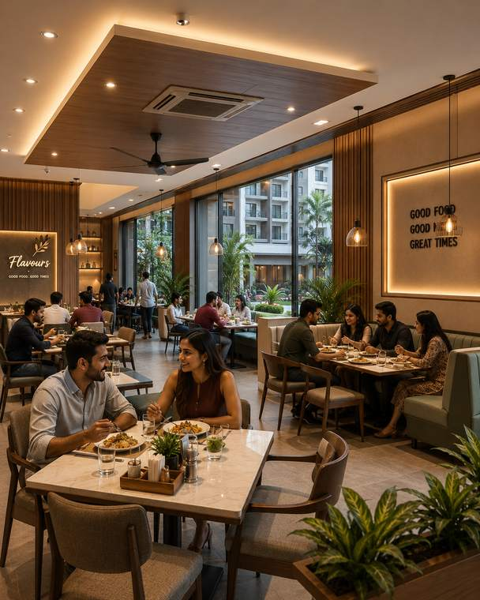
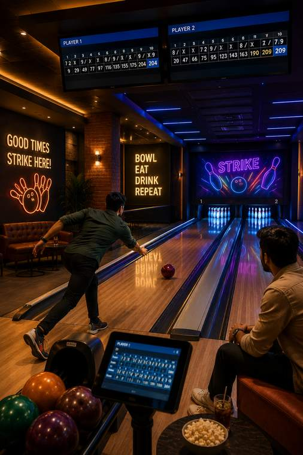
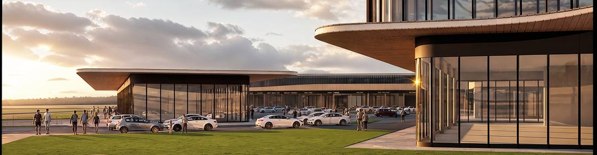
Private site visits, pricing and plot availability, from our own team.